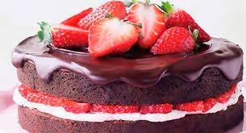

Chocolate cake with strawberry

ingredintes For two round molds of 18x6 cm.
4 cups of flour.
1/2 cup cocoa powder without sugar.
3 tbsp of yeast chemical (royal).
1 cdita. of salt.
460 grs. of butter.
200 grs. of normal sugar (the recipe at home takes 800 grams too many for me, but if they are sweet ....)
100 grs. of brown sugar-mascabado.
8 separate eggs (egg whites and yolks).
2 vanilla pods or 4 tbsp. of a good vanilla extract.
2 tbsp. of lemon zest.
2 cups of milk.
Various: 1 kilo of fresh strawberries, 1 meter of dark brown ribbon and 1 meter of light brown ribbon.
50 grs. dark melted chocolate, a small-billed duya.
Preparation:
Sift the dry ingredients.
Accrete butter at room temperature with clear and brown sugar.
Add the yolks one by one, then the vanilla.
We incorporate the dry ingredients (flour, cocoa, royal and salt) and milk alternately to have a consistent mixture.
We raise the whites until they form peaks and we integrate them integrally in the previous mixture.
We divide the mixture in two and empty it in the two molds that we have greased and floured previously.
We bake at 180 for about an hour, until a chopstick comes out clean.
Let cool, unmold and set aside.
Chocolate turroncitos: With the chocolate melted and emptied in a pastry bag, with a duya of smooth and small peak, we are going to be forming turroncitos on butter paper, that we are going to refrigerate until the hour of using. They leave about 16-18 nougat.